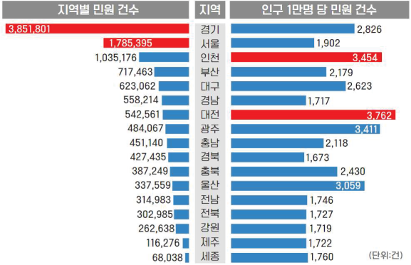
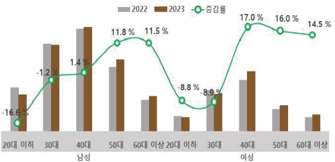
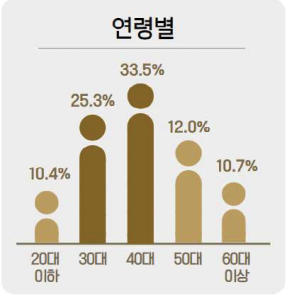
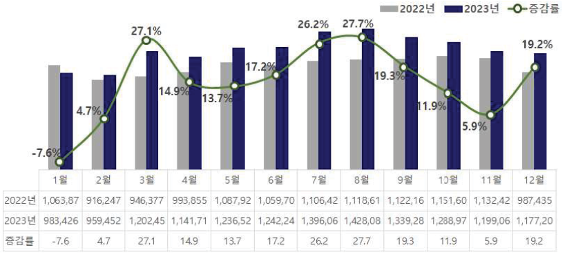
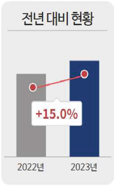
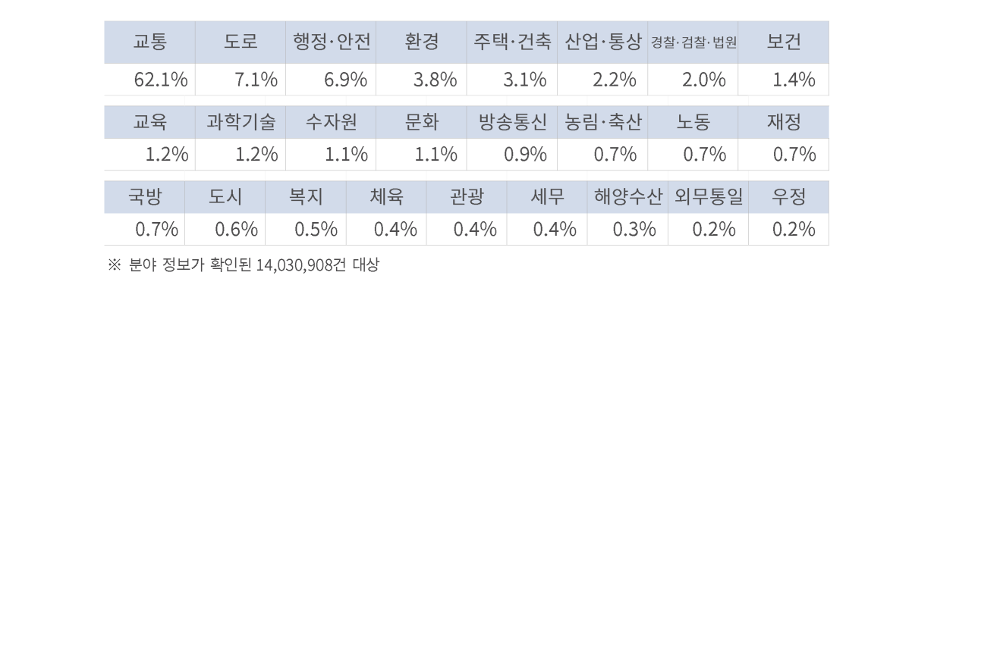
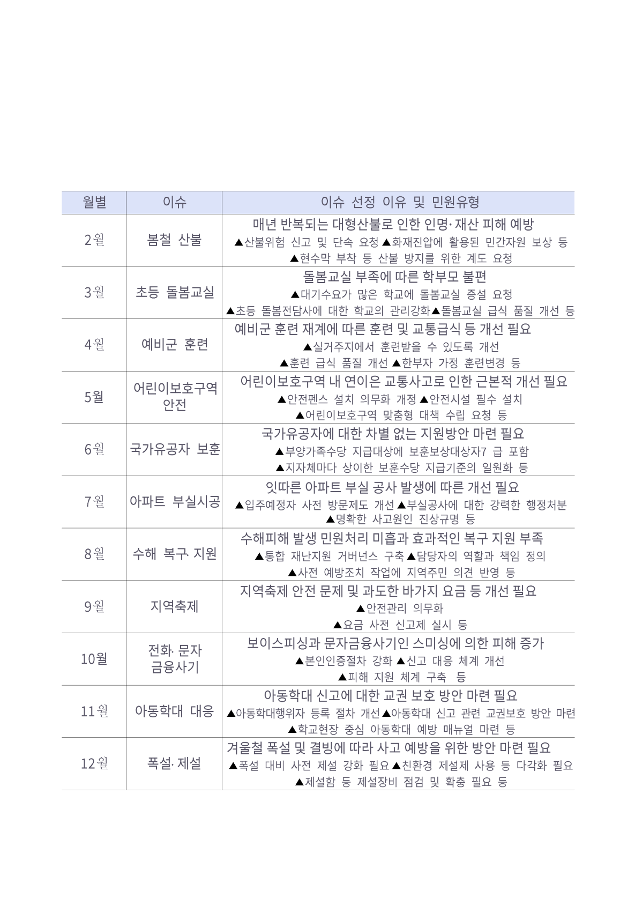

한눈에 보는 2023년 국민의 소리
● 지역별 현황

경기 31.4% 건 (3,851,801), 서울 14.6% 인천 8.4% 건 (1,785,395 ), 건
(1,035,176 )로 수도권이 전체의 54.4% 부산 5.8% (717,463 ) 대구 건 경남
4.6% , (558,214 ) 대전 건 광주 3.9% , 5.1% (623,062 ), 건 4.4% (542,561 ),
건 (484,067 ) 순
인구수 (’23.12 월 기준 )를 기준(민원발생량/ 지역인구수)으로 보면 대전,
인천, 광주, 울산, 경기 등의 지역에서 상대적으로 많이 발생

● 기관별 동향
2023 년 중앙행정기관 민원은 15 총 건 3,099,435 으로 전년 대비 5.5% 증가
발생량 상위 개 기관 중 전년 대비 민원이 가장 많이 증가한 기관은 기재부 등,
감소한 기관은 교육부 환경부 등
2023 년 광역자치단체 민원은 총 1,042,493건으로 전년 대비 5.0% 감소, 전년
대비 민원이 증가한 시 도는 광주 제주 전북 부산 등 14개, 감소한 시 도는 경기
서울 등 3개

● 신청인 연령
연령별로는 40대(33.5%)이 다수를 차지, 전년 대비 40대 이상 연령층 증가,
40대 여성(17.0%) 및 50대 여성(16.0%)이 가장 많이 증가

● 신청인 성별
성별로는 남성(68.3%)이 다수를 차지


2023 년 민원 발생량은 총 14,594,501건, 전년 (12,686,664건) 대비 건 15.0%
증가. 8월 발생량이 가장 높고, 1월을 제외하고 모두 전년 동기 대비 증가
● 전체 민원 동향
● 분야별 현황
● 월별 키워드
분야별로는 교통 분야(62.1%)가 가장 많고, 도로(7.1%), 행정 안전(6.9%),
환경(3.8%), 주택 건축(3.1%), 산업 통상(2.2%) 분야 등의 순

